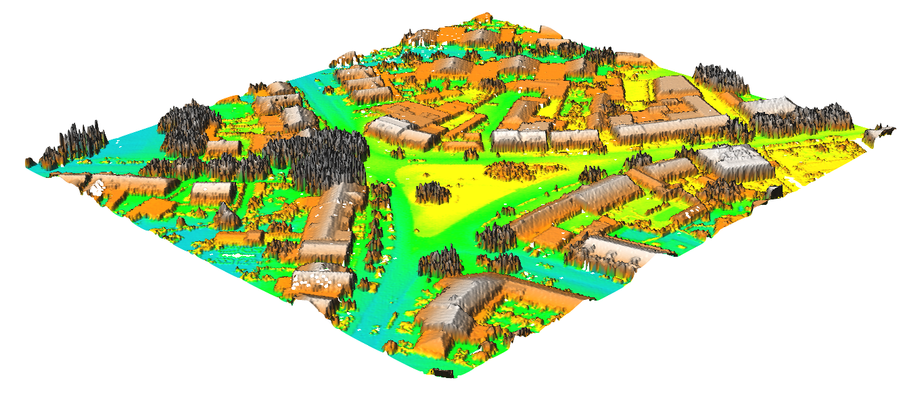
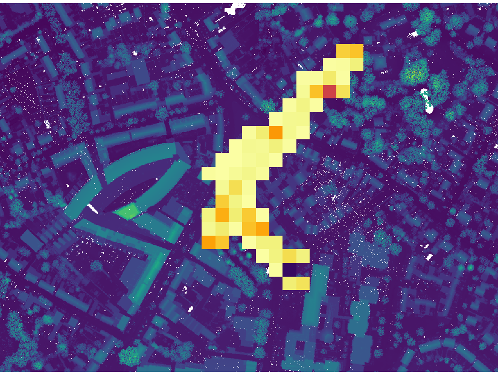
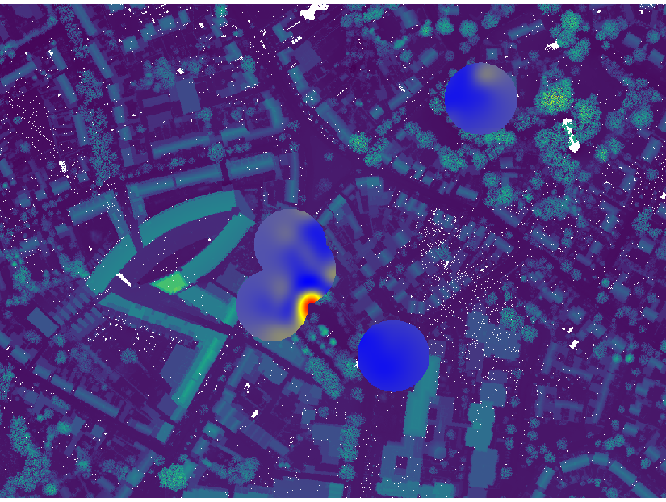
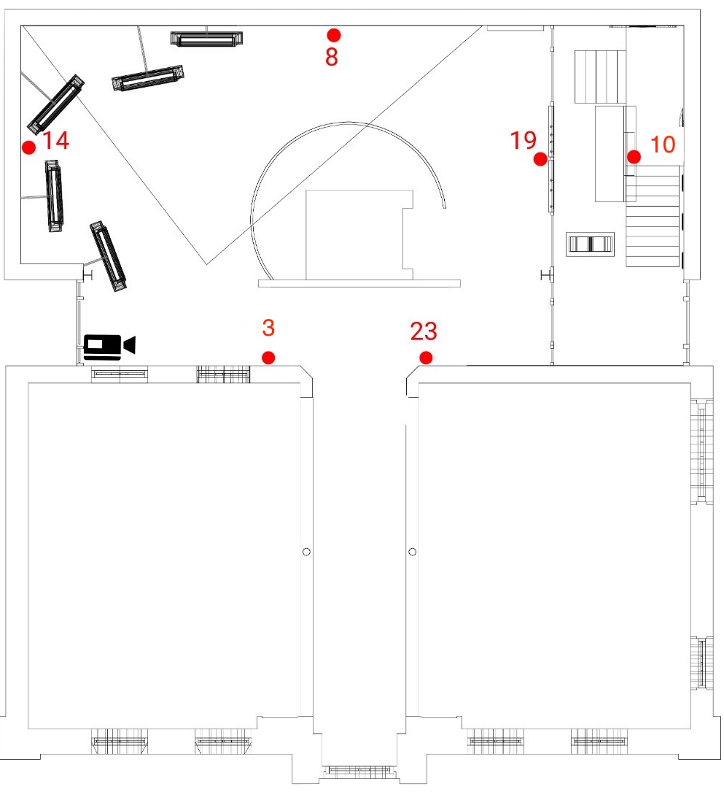
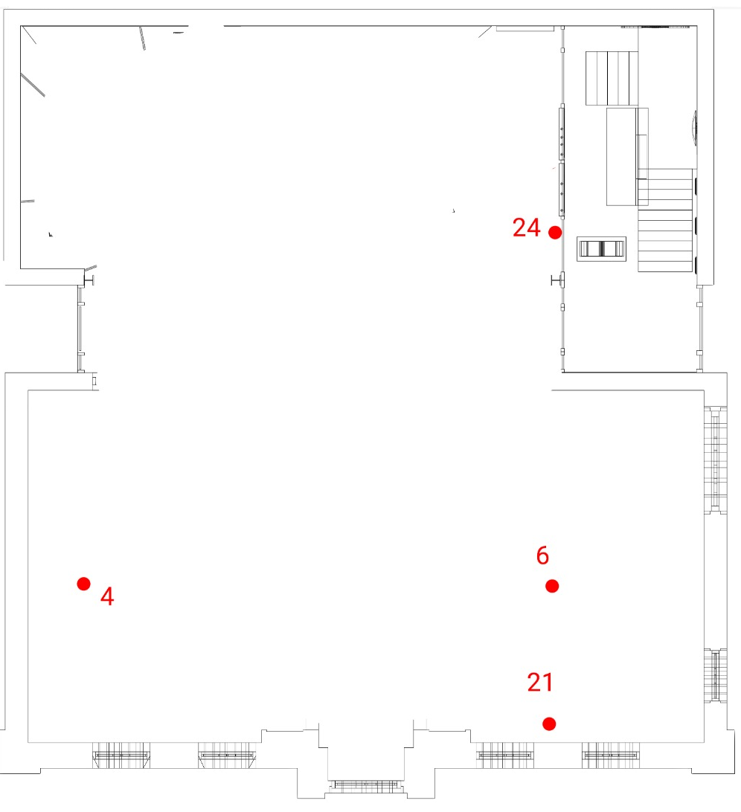
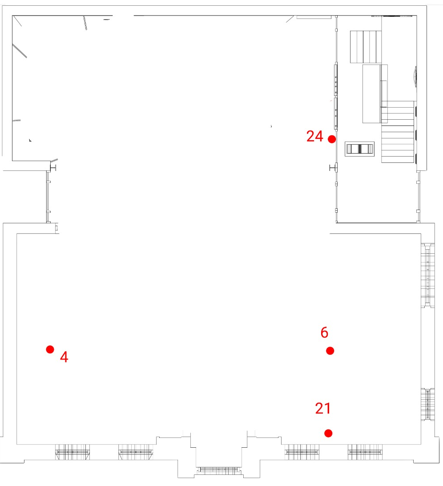

Humans, Environment & Emotions
- Research Question: Do certain exhibits cause more excitement in museum visitors over others?
- Goal: Compute Geospatial Emotion Model
- Purpose: Assist museum directors to design most engaging museum possible
Who cares?
What sort of data is required in a "Geospatial Emotion Model"?
- All data. To ever exist:
- Person ID
- Location (x,y)
- Time (spent in location)
- Skin Conductance
- Direction (to & from exhibits)
- Velocity
- Distance to Exhibits
- Viewshed (indoors & outdoors)
Study Area (Outdoors & Indoors)


Study Area: Outdoor Exhibits
Data: Outdoors


Time

Skin Conductivity
Preliminary Approach: Outdoors
Binning & Correlations
First Approach: Growing Exhibit Areas
Gives you: distance from exhibits as associated with emotion response.
First Approach: Growing Exhibit Areas



Second Approach: Viewsheds
Indoors: Trilaterating Participant Locations

 

Almost There: Needed Data Values for Geospatial Emotion Model
- Person: ✔️
- Location: ✔️
- Time: ✔️
- Skin Conductance: ✔️
- Direction: üèãü躂Äç
- Velocity: üèãü躂Äç
- Distance to Exhibits: üèãü躂Äç
- Viewshed: ✔️
- Once ^ is all checked: Statistics. Statistics. Statistics.
Questions?